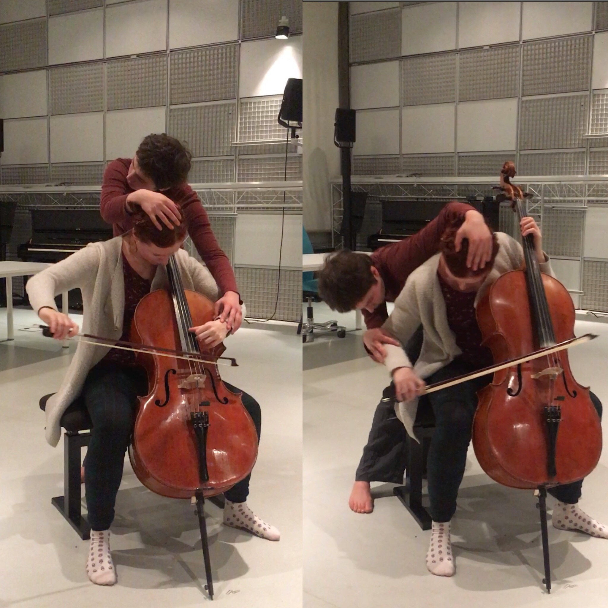
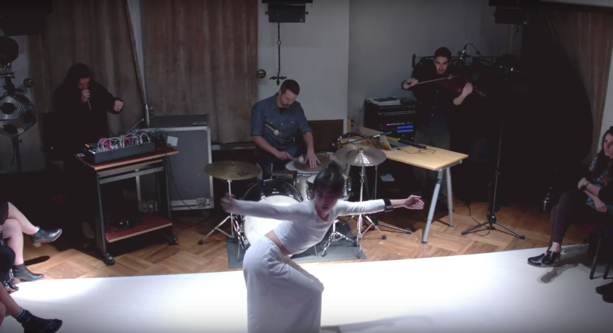

Latest Post
2025 Reflections
2025 was wild. As someone who made the decision in 2018 to not become a “professional artist or academic”, I never imagined that I'd have 30 events in one year. I loved being busy, but it was stressful.My projects this…
Read post
Dismantle the Instrument
In the past 5 posts, I’ve gone in depth about 2 solo projects that I’ve created and performed over the past 2 years. This will be the final post in the series, and it will be about dramaturgy.Let me first say that I’m…

How to Control a Computer Without Touching It
This short post is gonna be about the technical aspects of the performance. The one after this will be dramaturgical.I left off talking about switching from a canvas-based system to one that solely tracks hands. Here's…

Change is the Only Constant
Sometimes when you start a project, its nature changes a million times before the performance.In Spring 2023, I felt the need to change my artistic practice. I had been working with motion sensor chips and dancers and…

Fade everything out, break character, and nod
The last entry left off describing the question of framing a toy. In my humble opinion, a toy is rarely enough to sustain a meaningful performance. You need dramaturgy and intention. How do you start and end a…

How to perform solo if you’re shy
In December 2016, I performed an improvised solo set at the University of California, Berkeley using my viola, a motion sensor on my bow arm streaming data to a MaxMSP patch, and a MIDI pedal controller. This was one of…

Long time, no see
Hey folks,I’ve decided to reboot this blog from six years ago. A lot has changed; some has stayed the same. I’m going to write a few posts about some solo performance work that I’ve created over the past two years.Photo…

in tensions: analysis 4
into the inner sublime without sound, just our vibrations without objects, just our vibrations without goals, just our bodies vibrations and projections, echoing inside our bodies, togetherSo, endings… I’ve gotten into…

in tensions: analysis 3
(In case you haven’t been following this mini-series,) in this entry, I’ll discuss the third section of my new work, in tensions, scored for dance, cello, and electronics.The transition between the second and third…

in tensions: analysis 2
This entry digs into the second section of the work... when we left off, the first section of the work ends at the moment where the performers make eye contact for the first time, acknowledging each other’s existence,…

in tensions: analysis 1
These next few entries will unpack my new work, in tensions, a performance written for cello, dance, and electronics during the Cursus at IRCAM. It was premiered by Polina Streltsova (cello) and Marie Albert…

Duos with dancers: Bonansea and Papazoglou, part 2
This entry will wrap up my sessions with Bonansea and Papazoglou, concluding with some thoughts regarding social behavior theories in improvisation.Body scores:These next two sessions involved Margarite performing short…

Duos with dancers: Bonansea and Papazoglou, part 1
These next two entries will go into detail regarding some recent sessions I’ve had with two dancers whom I greatly admire: Christine Bonansea and Margarite Papazoglou. I will discuss the premise and progression of each…

first workshop - etudes for dancer and musicians, part 3
In the last article of this series, I’m going to present a fifth etude, along with an overall analysis what this all means..Broken LoopIn “Broken Loop”, each player independently picks three ideas to improvise on. The…

first workshop - etudes for dancer and musicians, part 2
Hello there again!In this shorter article, I'll cover two more etudes. Unfortunately for the reader, one of them features the author "dancing" (Alice had to leave a bit early, so yours truly stepped in). It's…

first workshop - etudes for dancer and musicians, part 1
Before starting, I should mention that the videos posted below are for pedagogical purposes only.IntroductionIn the recent weeks, I’ve been developing a series of improvised etudes scored for dancer and musicians. The…

on choreomusicology and performative attention
Recently, I’ve been thinking about how musicians and dancers share performance spaces, and the environment that they create together. This obsession lead me to stumbled upon a new word during a google binge:…

reflections, or, narcissistic procrastination
I sometimes evaluate my own work as an artifact of my past self. Composers sometimes joke that listening to old recordings of earlier pieces conjure up feelings similar to when we read adolescent diary entries. These…

ironic erratic erotic: work in progress
In this entry, I'm going to dive further into my process for composing ironic erratic erotic. This project is in collaboration with 3 Berlin-based performers: dancer Yuri Shimaoka, bassist Adam Goodwin, and tubist…

define//defile: working methods of dancers and musicians
In this entry, I'm going to go over DEFINE//DEFILE, a recent project of mine that will be premiered by the Mivos Quartet and dancer SanSan Kwan this Friday night in San Francisco. Click here for…

music amplifies and subverts the body
In the summer of 2016, I attended the Darmstadt Summer Courses where I met Berlin-based English tubist Jack Adler-Mckean. We quickly became friends and I learned about Jack’s unique situation: he was the only tuba…

a little background - part 3
Until last October, I hadn’t played viola solo in public for about 8 or 10 years. I had performed with orchestras and string quartets, but never alone. I had always thought of myself as a terrible player. I did not have…

a little background - part 2
In 2015, I received a delightful email from Cheryl Duvall of Toronto’s Thin Edge New Music Collective. They were planning a collaboration with Rebecca Leonard’s contemporary circus company A Girl in the Sky…

a little background - part 1
Warning: this post is a bit self-indulgent. I will review my collaborations with dancers in a musical context over the past three years and attempt to draw a thread from these to my current projects.My first project…

collaboration as performance
Two friends of mine (thanks Ilya and Brian) recently gave me the idea of blogging the compositional process. This is something that is common in other fields (programming, cooking, engineering, etc.), but is…

movement to sound: multimodal transcription
All sound comes from some sort of movement, whether it’s a strong wind rustling leaves, your lips forming a word, or electrical current. As a musician who grew up playing viola in orchestras, I learned to interpret…